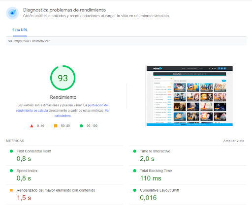

Herramientas online de comprobación de velocidad
Google Page Speed Insights
Además de ofrecer herramientas para automatizar el análisis, Google Developers nos ofrece esta herramienta online que analiza cualquier página y nos indica los puntos de mejora.
En la siguiente imagen introducimos la url de la página que vamos a analizar, podemos ver que nota le asigna la aplicación dependiendo de si es para móvil o para ordenador.
En esta imagen nos da una puntuación según los puntos de la imagen.
Una vez analizada la nota de los puntos anteriores nos da una nota de rendimiento con un resumen del punto anterior junto con unos consejos de mejoría.
Pingdom Tools
En su modo gratuito basta con indicar la URL y el test procede a llevar a cabo una petición contabilizando todas las peticiones derivadas, tiempo de carga, etc. Y ofreciendo una nota final de rendimiento. También se muestra un desglose de cada elemento que debe descargarse y el tiempo que ha necesitado.
Nos da una puntuación y un breve resumen de lo que se tiene que mejorar en la página, junto con el tiempo de carga, el tamaño de la página y las peticiones que se le hacen a la página.
Web Page Analizer
Introducimos la URL que queremos analizar y nos mostrará un resumen detallado de la página.
Testing
Cuando se desarrolla una aplicación Web con distintas páginas, comprobar que todo funciona correctamente resulta una tarea necesaria, pero muy tediosa, más aún cuando hay que hacerla cada vez que se hace un cambio. Por suerte contamos con herramientas como Selenium.
Selenium
Esta herramienta OpenSource nos permite crear toda clase de test para comprobar el correcto funcionamiento de la aplicación Web simulando las acciones de un usuario. Selenium nos permite desarrollar el testeo de distintas maneras y también podremos llevar a cabo el testing a través de herramientas de programación o de plugins de navegador.
Selenium-Addon
La forma más directa de crear testeos automatización con Selenium es a través de su addon para navegadores, el cual podemos instalar fácilmente a través del repositorio oficial de addons. Una vez hecho, veremos el icono del mismo.
Al pulsarlo se abrirá la herramienta con la cual ya podremos hacer tests. En realidad es tan sencillo como pulsar el botón de grabación, utilizar la web que deseemos testear, y todas las acciones quedarán grabadas en Selenium. De esa manera, podremos reproducir los test siempre que queramos
En este addon se gestionan dos tipos de elementos, los cuales se pueden crear, guardar, eliminar, explotar, etc.:
- Test-Case: Es una prueba o conjunto de acciones concretas.
- Test-Suite: Es un conjunto de casos o Test-Case.
Por defecto se crea un Test-Suite con un Test-Case al que le podremos añadir más casos.
Crear un test
Primero, debemos llevar manualmente el navegador a la página o aplicación que queremos testear. Una vez iniciado el addon podemos pulsar el botón rojo de grabación.
Tras eso, no tenemos más que utilizar la web como si fuéramos un usuario. Podemos agrupar todas las acciones en el mismo test o bien hacer pequeños test deteniendo la grabación y creando nuevos Test-Case. Conforme vayamos usando la página, veremos cómo el addon va registrando todas las acciones que luego podrá reproducir

Una vez registradas las acciones, ya podemos pulsar el botón de play para reproducirlas. Esta es una parte más vistosa de Selenium ya que nos mostrará cómo efectivamente toma el control del navegador y reproduce esas acciones a toda velocidad. Al final nos indicará si hay algún error o algún comportamiento inesperado o, por el contrario, el color verde que significa que todo se ha reproducido correctamente. Si alguno de los pasos falla, se indicará de forma individual en el listado de acciones.
Selenium API
Una de las grandes aportaciones de Selenium es que dispone de APIs para desarrollar tests en distintos lenguajes de programación: Java, C#, Python, JavaScript, etc. Una vez desarrollado el test Selenium pondrá en ejecución un navegador y simulará las operaciones que les hayamos indicado. En caso de no recibir alguna respuesta esperada el test falla, de tal manera que podemos detectar errores.
Protractor: tests programados
Selenium es una gran herramienta con la que podemos crear test e2e (end-to-end) de manera muy ágil en cualquier ordenador que tenga un navegador instalado. Pero generalmente los test se hacen mucho más específicos, se programan y se integran dentro de builds o procesos de integración continua.
Podemos desarrollar tests e2e para Selenium con los lenguajes más populares, y en este caso mostraremos cómo se llevan a cabo desde uno de los lenguajes esenciales de la Web: JavaScript. Además haremos uso de la infraestructura que hemos utilizado a lo largo de todo este libro.
La herramienta que nos permite organizar rápidamente los test es Protractor. Este es un proyecto ideado para llevar a cabo los test e2e de aplicaciones basadas en el framework Angular.js, aunque lo podemos usar perfectamente en cualquier aplicación Web, ya que al ser precisamente e2e no nos importan los lenguajes y librerías que se utilicen, sino el uso de la web en sí.
Preparación del entorno
Protractor se ejecuta, como muchas otras herramientas Web, sobre Node.js y puede instalarse rápidamente a través de su gestor de paquetes:
npm install -g protractor
Esto instalará de forma global en el sistema el propio Protractor y el webdriver de selenium que se encargará de ejecutar los propios test. Antes de hacer nada debemos actualizar el webdriver:
webdriver-manager update
Y una vez hecho lo dejamos en marcha como un servicio para que Protractor le ordene aquello que debe testear:
webdriver-manager start
Para comprobarlo introducimos localhost:4444/wd/hub en el navegador.
Todo esto se puede organizar en un proyecto con su fichero packge.json y con una serie de scripts predefinidos. En el ejemplo en que se basa este apartado todo ese trabajo ya está hecho.
Protractor necesita un fichero de configuración donde indicamos algunas opciones esenciales, como ubicación de los ficheros de configuración donde indicamos algunas opciones esenciales, como ubicación de los ficheros de testeo, el o los navegadores que utilizar. etc.
Test index
Se trata de comprobar la página índice. La comprobación básicamente consiste en solicitar la url inicial y comprobar que efectivamente se ha cargado.
Test home
Se trata de comprobar la página índice. Antes de cada bloque it se ejecuta el código beforeEach. Siempre lo utilizaremos para cargar la página que queremos testear. para cada test la página comenzará desde una carga limpia.
Test about
Se trata de comprobar que la página about o acerca de que se carga correctamente.
Test list
Se trata de comprobar la página que lista todos los contactos que tenemos. En definitiva, comprobamos cosas similares a las básicas, además de ver realmente hay una lista de contactos.
Test detail
Se trata de comprobar las páginas que muestran el detalle de un registro concreto.
Test new
Se trata de comprobar la página que nos permite introducir nuevos usuarios. Para cada prueba empezando por cargar la página que crea nuevos registros. Comprobaremos si realmente cargamos esa página y, además, si funciona o no su formulario.
Test update
Se trata de comprobar la página más compleja, que es la de actualización. Una vez más tenemos que verificar, por un lado, que las páginas tienen el contenido esperado y que, además, la funcionalidad se cumple.
Test delete
Por último, comprobamos, que la funcionalidad de eliminar sea efectiva.